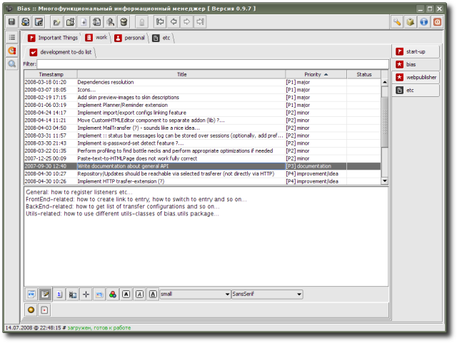

ToDoList - список заданий с возможностью сортировки по приоритету, статусу и т.д. (набор приоритетов/статусов настраивается); помимо короткого описания задания, можно добавить расширенное описание, с включением картинок, ссылок и т.п. (здесь все аналогично функциональности расширения HTMLPage).
Расширение предоставлено Р. Касьяненко, автором приложения Bias.
Предварительный просмотр:
